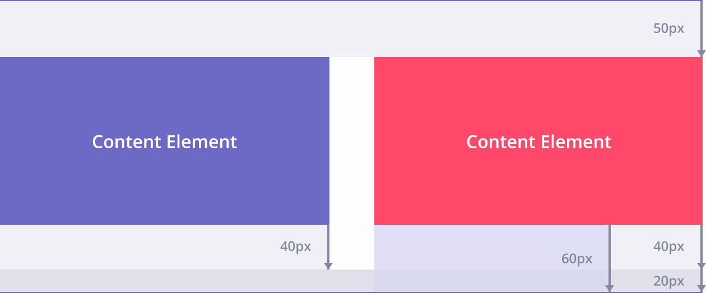

Component Spacing
Sections of content are structured in "rows", each section row with 60px bottom spacing. Columns within rows have 40px margin bottom for when content is stacked at lower screen widths. The 20px padding bottom of the section container makes up the 60px gap. For a section with a border bottom, there is 60px space above the border and 50px gap below before the next section.
Spacing is applied in rem units so that a change in body font size also increases the spacing between sections.
Example
The Code
Structure and CSS classes
Content layout is based on a twelve column grid that responds at different breakpoints.
The grid structure is generated from SASS using http://semantic.gs but the mixins have been customised to use padding between columns instead of margins. This is to enable solid background colour of columns including the gutters.
The code box shows the grid structure and available classes to generate the number of columns the element should fill. The code example creates a grid with side margins that contains two columns: one that takes up one third of the twelve column grid, another that takes up two thirds.
<div class="grid-container"> contains the grid and provides the right/left grid margin. Omit this tag if the grid does not require right/left margins.
<div class="grid__row"> creates a new cleared row for the grid layout, if required.
Columns require the base class "grid-column" to set column styles and then a class to represent the number of columns the element should fill.
/* Structure of a grid based layout */
<div class="grid-container">
<div class="grid__row">
<div class="grid__column grid__column--one-third">
Column content
</div>
<div class="grid__column grid__column--two-thirds">
Column content
</div>
</div>
</div>
/* Classes available for column widths */
.grid__column--one-twelfth
.grid__column--one-sixth
.grid__column--one-quarter
.grid__column--one-third
.grid__column--one-half
.grid__column--two-thirds
.grid__column--three-quarters
.grid__column--full-width
Creating column widths from the SASS
Column widths can be generated in the SASS for an element by calling the grid mixin column(x). Parameter x is the number of columns of the twelve column grid the element should fill.
@include column(9);
/* Columns within a nested grid
Creating a three column width column within a nested grid,
where the nested grid container is 9 columns wide */
@include column(3,9)
Nested grids
A nested grid is a grid within the main grid. An example would be a nested grid of blog articles on the left and a sidebar on the right.
<div class="grid__row-container"> is the container for the nested grid and requires a class to set the number of columns.
When generating columns within a nested grid (the <li> elements in the code box example) the column mixin requires two parameters, @include column(x,z). x is the number of columns the element should fill based on the twelve column grid. z is the number of columns the parent grid fills. So for an element that requires three column widths of the twelve column grid, within a grid of 9 columns, the mixin call is @include column(3,9).
<div class="grid-container">
<div class="grid__row-container grid__column--two-thirds">
<ul class="grid__row">
<li>Blog article</li>
<li>Blog article</li>
<li>Blog article</li>
<li>Blog article</li>
</ul>
</div>
<div class="grid__column grid__column--one-third">Sidebar</div>
Responsive Breakpoints
Breakpoint mixin
The Breakpoint (http://breakpoint-sass.com) Ruby gem for SASS is used to create media queries. SASS styling should be structured from smallest screen width upwards. When styling for a particular breakpoint the breakpoint(x) mixin should be called, where the x parameter is a variable set to the minimum screen width size for the media query.
The code box example shows styling of the global header height for mobile and the call to the breakpoint mixin to add styling for "phablet" sized devices and up.
Calling breakpoint() with a second parameter "true" will include the CSS in the IE8 stylesheet.
/* Breakpoint mixin example */
.global-header {
height: 42px;
@include breakpoint($phablet, true) {
height: 62px;
}
}
/* Breakpoint variables */
$phablet: 480px;
$tablet: 720px;
$laptop: 960px;
$desktop: 1240px;
$desktop-wide: 1600px;